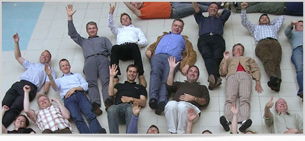
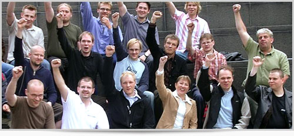

Scrum培训
任何一个敏捷企业和敏捷团队的成功转变都是从人的培训开始。ShineScrum拥有一支业内最富有经验的scrum讲师团队，提供多样化的培训服务来满足您的需求，从标准的CSM培训到可针对企业普通员工，中层管理人员及高管等不同级别专门定制的课程。
敏捷咨询
我们根据每个企业的公司文化（正如一个人的个性）和业务目标定制敏捷化解决方案，涵盖认证、培训、咨询、教练、辅导等多个方面，短期内我们会为您解决组织及项目的核心问题，包括交付效率、交付质量、交付成本、员工士气等，长期会为您的企业建立持续改善的机制。ShineScrum将帮助您建立一个真正的敏捷企业，而非制定和遵循“敏捷制度”。